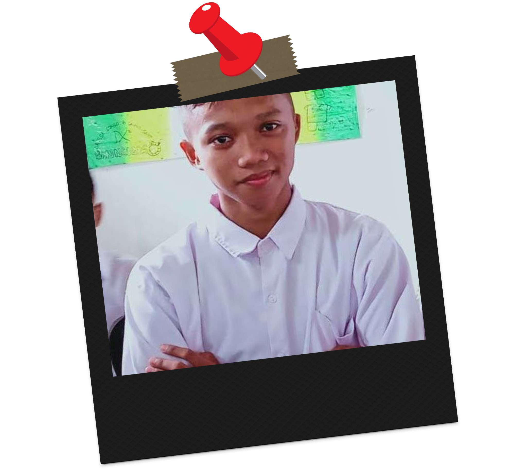

Galuh Kurnia –
"Welcome to my personal space."
Di sini, saya berbagi cerita,...
Saya percaya bahwa setiap proses belajar, sekecil apa pun, layak untuk dibagikan.
Semoga tulisan-tulisan di blog ini bisa menjadi pengingat untuk saya sendiri
dan inspirasi bagi siapa pun yang sedang berproses.
"Setiap proses punya ceritanya. Jangan buru-buru selesai, nikmati tumbuhnya."